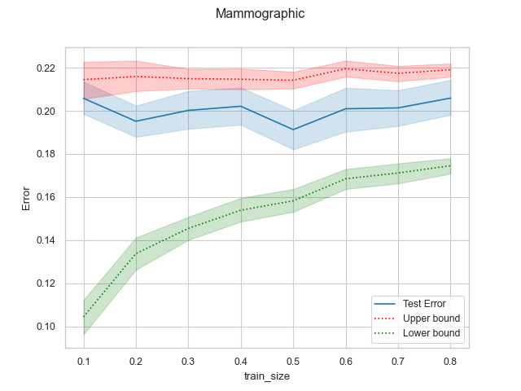
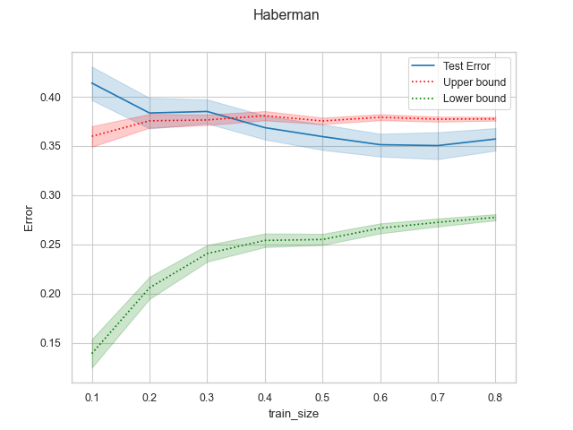
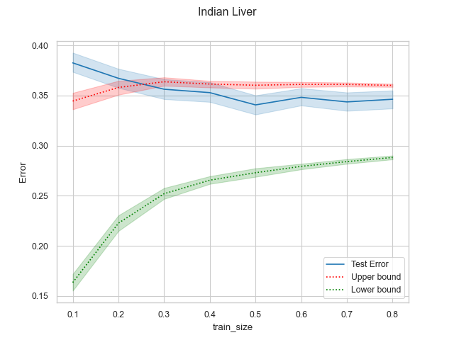
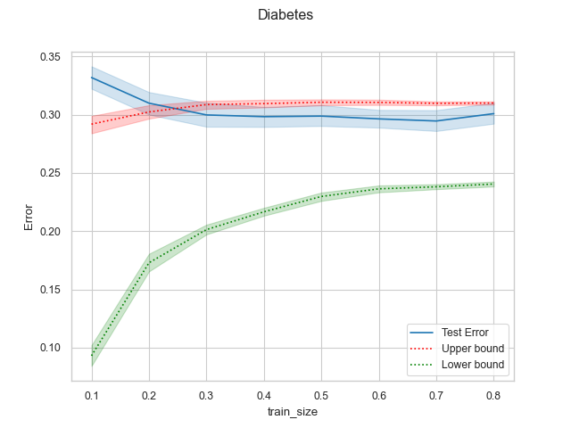
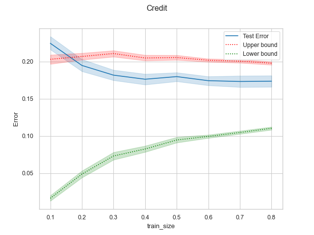
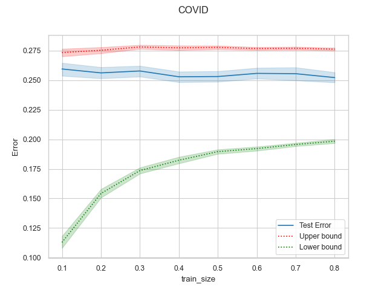

Note
Click here to download the full example code
Example: Use of Upper and Lower bound as error estimation#
This example is an extension to ex2 where we will prove how the upper and
lower bound of the loss are an unbiased estimator of the error. The models are
trained with different number of cases ranging from 10% to 80% of the data and
then are tested with 20% of the samples. The graphs show how in most of the
cases the error is between those bounds which proves the potential of this
feature of the MRCs. The results are for a
MRC(phi = 'fourier', loss = '0-1', s = 1)
Note
Note that there is an additional dataset related to COVID-19
patients that is available upon requesting to HM Hospitales
here.
More information about this dataset can be found in the
COVID example
# Import needed modules
import time
import warnings
import matplotlib.pyplot as plt
import numpy as np
import pandas as pd
import seaborn as sns
from imblearn.over_sampling import SMOTE
from sklearn import preprocessing
from sklearn.model_selection import RepeatedStratifiedKFold
from MRCpy import MRC
from MRCpy.datasets import *
sns.set_style("whitegrid")
sns.set_context("paper")
warnings.filterwarnings("ignore")
def load_covid(norm=False, array=True):
data_consensus = pd.read_csv("data/data_consensus.csv", sep=";")
variable_dict = {
"CD0000AGE": "Age",
"CORE": "PATIENT_ID",
"CT000000U": "Urea",
"CT00000BT": "Bilirubin",
"CT00000NA": "Sodium",
"CT00000TP": "Proth_time",
"CT0000COM": "Com",
"CT0000LDH": "LDH",
"CT0000NEU": "Neutrophils",
"CT0000PCR": "Pro_C_Rea",
"CT0000VCM": "Med_corp_vol",
"CT000APTT": "Ceph_time",
"CT000CHCM": "Mean_corp_Hgb",
"CT000EOSP": "Eosinophils%",
"CT000LEUC": "Leukocytes",
"CT000LINP": "Lymphocytes%",
"CT000NEUP": "Neutrophils%",
"CT000PLAQ": "Platelet_count",
"CTHSDXXRATE": "Rate",
"CTHSDXXSAT": "Sat",
"ED0DISWHY": "Status",
"F_INGRESO/ADMISSION_D_ING/INPAT": "Fecha_admision",
"SEXO/SEX": "Sexo",
}
data_consensus = data_consensus.rename(columns=variable_dict)
if norm:
x_consensus = data_consensus[
data_consensus.columns.difference(["Status", "PATIENT_ID"])
][:]
std_scale = preprocessing.StandardScaler().fit(x_consensus)
x_consensus_std = std_scale.transform(x_consensus)
dataframex_consensus = pd.DataFrame(
x_consensus_std, columns=x_consensus.columns
)
data_consensus.reset_index(drop=True, inplace=True)
data_consensus = pd.concat(
[dataframex_consensus, data_consensus[["Status"]]], axis=1
)
data_consensus = data_consensus[data_consensus.columns.difference(
["PATIENT_ID"])]
X = data_consensus[data_consensus.columns.difference(
["Status", "PATIENT_ID"])]
y = data_consensus["Status"]
if array:
X = X.to_numpy()
y = y.to_numpy()
return X, y
def getUpperLowerdf(train_size, X, y, cv, paramsMRC, smote=True):
"""
Parameters
----------
train_size : array
Array of different training sizes to train the model.
cv : CrossValidator
Cross validator.
paramsMRC : TYPE
Parameters for the MRCs.
smote : Bool, optional
Class imbalance corrector, set to false to disable. The default is
True.
Returns
-------
table : dataFrame
Dataframe with the results of the training for each training size.
"""
if smote:
smotefit = SMOTE(sampling_strategy="auto")
X, y = smotefit.fit_resample(X, y)
table = pd.DataFrame()
for train_set in train_size:
for j, (train_index, test_index) in enumerate(cv.split(X, y)):
X_train, X_test = X[train_index], X[test_index]
y_train, y_test = y[train_index], y[test_index]
random_indices = np.random.choice(
X_train.shape[0], size=int(X.shape[0] * train_set),
replace=False,
)
X_train = X_train[random_indices, :]
y_train = y_train[random_indices]
std_scale = preprocessing.StandardScaler().fit(X_train, y_train)
X_train = std_scale.transform(X_train)
X_test = std_scale.transform(X_test)
start_time = time.time()
MRC_model = MRC(phi="fourier", s=1, **
paramsMRC).fit(X_train, y_train)
train_time = time.time() - start_time
auxtable = pd.DataFrame(
columns=["Error", "Upper", "Lower", "iteration", "train_size",
"Time", ],
index=range(0, 1),
)
auxtable["train_size"] = train_set
auxtable["iteration"] = j
auxtable["Error"] = 1 - MRC_model.score(X_test, y_test)
auxtable["Time"] = train_time
auxtable["Upper"] = MRC_model.get_upper_bound()
auxtable["Lower"] = MRC_model.get_lower_bound()
table = table.append(auxtable, ignore_index=True)
return table
# Data sets
loaders = [
load_mammographic,
load_haberman,
load_indian_liver,
load_diabetes,
load_credit,
load_covid,
]
dataName = [
"mammographic",
"haberman",
"indian_liver",
"diabetes",
"credit",
"COVID",
]
paramsMRC = {
"deterministic": False,
"fit_intercept": False,
"use_cvx": True,
"loss": "0-1",
}
train = np.arange(0.1, 0.81, 0.1)
Cross test validation#
5 fold repeated Stratified Cross validation is performed where each of the fold is trained with 80% of the data and then tested with the remaining 20%
n_splits = 5
n_repeats = 10
cv = RepeatedStratifiedKFold(n_splits=n_splits, n_repeats=n_repeats,
random_state=1)
Results#
We will present the results for the 6 datasets. For more information about the dataset refer to the MRCpy documentation of the loaders. In the results we can see how the upper and lower bounds get closer when the training size is increased. Furthermore, the standard deviation of both bounds is reduced significantly.
Mammographic#
X, y = load_mammographic()
table = getUpperLowerdf(train, X, y, cv, paramsMRC)
# dataframes.append(table)
# plotUpperLower(table)
means = table[table.columns.difference(["iteration"])].groupby(
"train_size").mean()
std = table[table.columns.difference(["iteration"])].groupby(
"train_size").std()
for column in means.columns:
means[column] = (
means[column].round(3).astype(str) + " ± " + std[column].round(
3).astype(str)
)
means[["Error", "Upper", "Lower", "Time"]]
fig, ax = plt.subplots()
sns.lineplot(data=table, x="train_size", y="Error", label="Test Error", ax=ax)
sns.lineplot(
data=table,
x="train_size",
y="Upper",
color="red",
label="Upper bound",
linestyle="dotted",
ax=ax,
)
sns.lineplot(
data=table,
x="train_size",
y="Lower",
color="green",
label="Lower bound",
linestyle="dotted",
ax=ax,
)
plt.suptitle("Mammographic")
plt.show()

Haberman#
X, y = load_haberman()
table = getUpperLowerdf(train, X, y, cv, paramsMRC)
means = table[table.columns.difference(
["iteration"])].groupby("train_size").mean()
std = table[table.columns.difference(
["iteration"])].groupby("train_size").std()
for column in means.columns:
means[column] = (
means[column].round(3).astype(
str) + " ± " + std[column].round(3).astype(str)
)
means[["Error", "Upper", "Lower", "Time"]]
fig, ax = plt.subplots()
sns.lineplot(data=table, x="train_size", y="Error", label="Test Error", ax=ax)
sns.lineplot(
data=table,
x="train_size",
y="Upper",
color="red",
label="Upper bound",
linestyle="dotted",
ax=ax,
)
sns.lineplot(
data=table,
x="train_size",
y="Lower",
color="green",
label="Lower bound",
linestyle="dotted",
ax=ax,
)
plt.suptitle("Haberman")
plt.show()

Indian liver#
X, y = load_indian_liver()
table = getUpperLowerdf(train, X, y, cv, paramsMRC)
means = table[table.columns.difference(
["iteration"])].groupby("train_size").mean()
std = table[table.columns.difference(
["iteration"])].groupby("train_size").std()
for column in means.columns:
means[column] = (
means[column].round(3).astype(str) + " ± " +
std[column].round(3).astype(str)
)
means[["Error", "Upper", "Lower", "Time"]]
fig, ax = plt.subplots()
sns.lineplot(data=table, x="train_size", y="Error", label="Test Error", ax=ax)
sns.lineplot(
data=table,
x="train_size",
y="Upper",
color="red",
label="Upper bound",
linestyle="dotted",
ax=ax,
)
sns.lineplot(
data=table,
x="train_size",
y="Lower",
color="green",
label="Lower bound",
linestyle="dotted",
ax=ax,
)
plt.suptitle("Indian Liver")
plt.show()

diabetes#
X, y = load_diabetes()
table = getUpperLowerdf(train, X, y, cv, paramsMRC)
means = table[table.columns.difference(
["iteration"])].groupby("train_size").mean()
std = table[table.columns.difference(
["iteration"])].groupby("train_size").std()
for column in means.columns:
means[column] = (
means[column].round(3).astype(str) + " ± " +
std[column].round(3).astype(str)
)
means[["Error", "Upper", "Lower", "Time"]]
fig, ax = plt.subplots()
sns.lineplot(data=table, x="train_size", y="Error", label="Test Error", ax=ax)
sns.lineplot(
data=table,
x="train_size",
y="Upper",
color="red",
label="Upper bound",
linestyle="dotted",
ax=ax,
)
sns.lineplot(
data=table,
x="train_size",
y="Lower",
color="green",
label="Lower bound",
linestyle="dotted",
ax=ax,
)
plt.suptitle("Diabetes")
plt.show()

credit#
X, y = load_credit()
table = getUpperLowerdf(train, X, y, cv, paramsMRC)
means = table[table.columns.difference(
["iteration"])].groupby("train_size").mean()
std = table[table.columns.difference(
["iteration"])].groupby("train_size").std()
for column in means.columns:
means[column] = (
means[column].round(3).astype(str) + " ± " +
std[column].round(3).astype(str)
)
means[["Error", "Upper", "Lower", "Time"]]
fig, ax = plt.subplots()
sns.lineplot(data=table, x="train_size", y="Error", label="Test Error", ax=ax)
sns.lineplot(
data=table,
x="train_size",
y="Upper",
color="red",
label="Upper bound",
linestyle="dotted",
ax=ax,
)
sns.lineplot(
data=table,
x="train_size",
y="Lower",
color="green",
label="Lower bound",
linestyle="dotted",
ax=ax,
)
plt.suptitle("Credit")
plt.show()

COVID#
table = pd.read_csv('data/table.csv')
means = table[table.columns.difference(
["iteration"])].groupby("train_size").mean()
std = table[table.columns.difference(
["iteration"])].groupby("train_size").std()
for column in means.columns:
means[column] = (
means[column].round(3).astype(str) + " ± " +
std[column].round(3).astype(str)
)
means[["Error", "Upper", "Lower", "Time"]]
fig, ax = plt.subplots()
sns.lineplot(data=table, x="train_size", y="Error", label="Test Error", ax=ax)
sns.lineplot(
data=table,
x="train_size",
y="Upper",
color="red",
label="Upper bound",
linestyle="dotted",
ax=ax,
)
sns.lineplot(
data=table,
x="train_size",
y="Lower",
color="green",
label="Lower bound",
linestyle="dotted",
ax=ax,
)
plt.suptitle("COVID")
plt.show()

Total running time of the script: ( 38 minutes 39.470 seconds)